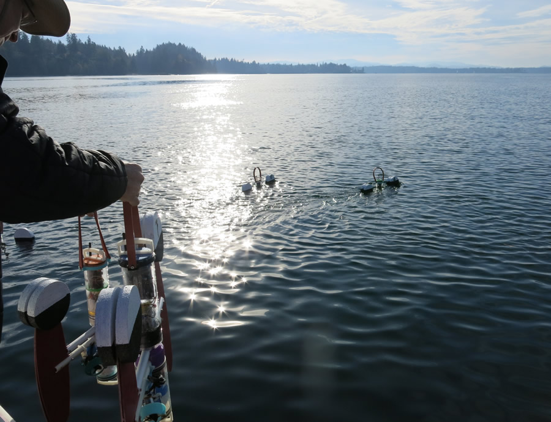

Vorticity Drifters
This is an exploratory research project, a collaboration with my brother, Dr. Tyler MacCready, of Apium. The drifters, called "Jacks" becasue they look like giant versions of the classic toy, are simple surface floats that follow the water motion, but becasue of the X-shape of their drag vanes, they also rotate with the local vertical vorticity of the water on approximately 1 m scales. We measure the position (and speed) using onboard GPS, and measure vorticity with an onboard compass.
Here is a group (a "swarm") of drifters on the dock at Boston Harbor Marina in South Puget Sound, November 2014. Tyler is on the left.
A close up of one of the "Jacks". The drag vanes can automatically fold up and then the drifter can power itself like a model boat using the submerged engine and propellor that is visible here.

Tyler deploying the swarm in Dana Passage in South Puget Sound, during a strong flood tide on November 8, 2014. The Jacks are in their folded position and the ones in the water are motoring away to their appointed starting locations. Thanks to Allen Pleus for expert skippering!
The above movie shows data from the simultaneous deplyment of five vorticity drifters in a tight formation in Dana Passage on 11/8/2014. They were deployed during a flood tide, moving about 2 km from right to left. The vorticity of individual drifters is shown as blue or red circles, and on the lower left plot as time series (where we also show the vorticity of the group - you can calculate the area-averaged vorticity using the circulation theorum). The striking thing to me in this data is how persistent the sign of vorticity is following a drifter track - keeping the same sign for 5-10 minutes in what appears to the eye to be a very turbulent environment. In the middle of the deployment we picked them all up (faint gray tracks) and redeployed where there were more visible surface features.
The black parts of the tracks are where Tyler has issued the signal for the swarm to reconfigure itself becasue it had been pushed into a non-optimal configuration. At that point all the Jacks fold up and motor to a new central point, using Tyler's clever swarming algorithms.
These measurements are motivated by the incredible surface features of turbulence asociated with tidal flow over rough topography in the inland waters of the Salish Sea. The straits and headlands are known to be hotspots for the conversion of tidal energy to turbulence. Often this involves "cutting" the flow - creating shear layers through flow separation, and creating sheets of strong vorticity. These are the defining feature of this energy conversion, yet we almost never measure the small scale vorticity directly. There are some examples where larger scale vorticity is measured using groups of drifters or intensive ADCP surveys (see McCabe et al. 2006).
The next goal is to deply a larger swarm of these drifters to start to quantify the surface vorticity field over a bigger region. Here is the field of surface features visible during a strong flood through Cattle Pass in the San Juan Islands. Photo by Rocky Geyer.